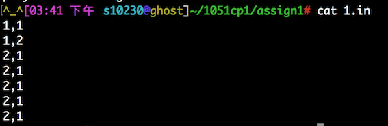
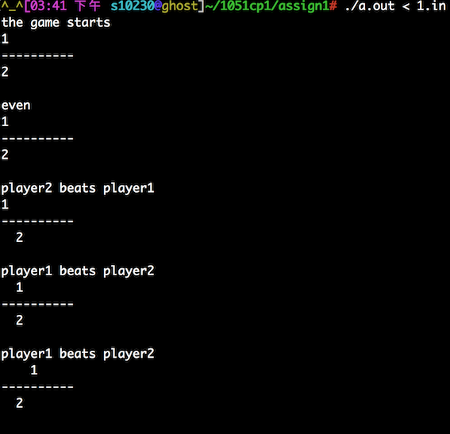
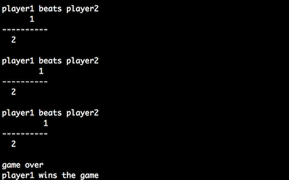

Nobita and Doraemon are "troublesome students" in the class. They like to play the game of Rock-Paper-Scissors in class. However, one day, they felt so bored of just playing Rock-Paper-Scissors. So, they asked the teachers for help. Teacher come up with an idea that they can play the game on the stairs, the rules of which is the following: The winner can go up 2 stairs; on the contrary, the loser can only stand at the same stair. One of two players reaches the top wins the game. If both of the two players throw the same punch, then your program needs to print out "even" on the screen; on the other hands, your program needs to judge who beats the other in the punch.
Input: There will be a series of numbers presenting the punches of the two players throw. 0 is a scissor, 1 is a stone, and 2 is paper. Your program needs to decide who wins the punch or tie in the punch.
Output: You are asked to print out the status of the game, for example, the status of which stairs player1 and player2 are standing at. If there is any player reaching the top stair (10th stairs), you need to close the game and print out the winner standing at the top stair.
Below are the details of the output: for each punch round,
Note that if there is any player over the 10th stair, your program still needs to let player stand at the 10th stair, and then closes the game with printing out the winner.
  